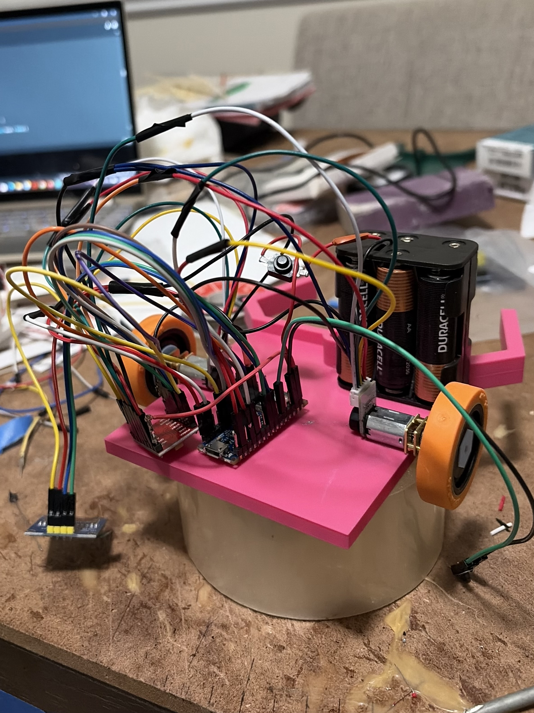

Projects
Autonomous Course-Navigating Robot

The Problem
Building a robot that drives itself through a course sounds simple, but real mtoros never behce identically. Small differences between wheels, surface friction, and battery voltsge cause a differntial-drive robot to drift off its intended path, and those erros compound over distance. The challenge was to design and build a roboto that could navigate a course autonomously with consistent precision while also picking up and manipulating objects along the way. That meant solving two problems at once: accurate motion control and reliable mechanical handling, all on a compact embedded platform with limited processingpower and no human input once it started.
The Process
I built the robot around an Arduino Nano 33 BLE and a differential-drive chassis. To fix drift, I implemented a PID control loop that used encoder readings for distance and gyroscope data for heading, then repeatedly tuned the constants through test runs until robot tracked straight lines and turns accurately. I designed and integrated a gripper/claw mechanism so it could grab objects mid-course, coordinating it with the navigation code. An OLED display showered real-time sensor values and system states, which made debugging much faster. I worked iteratively, testing each subsystem on its own before combining them.
The Outcome
The finished robot navigated the course autonomously, using PID control with encoder and gyroscope feedback to hold its heading and correct drfit. I placed top 5 at state Science Olympiad Competition suing this robot. The gripper picked up and handled objects along the route without any human input. Through this project, I learned how much tuning and testing seperate a design that works on paper from one thst works in practice. I also learned to build and verify each subsystem on its own before integrating them, and to use live debugging feedback to find problems quickly.
Discovery Project

The Problem
Guitar distortion pedals are everywhere, but most commerical ones are fixed designs: the tone is locked in by component values I can't see or change. I wanted to understand waht acutally creates distortion. and how circuit choices shape the sound. My challenge is to design and build a custom distoriton pedal fromscratch that clips a guitar signal in a pleasing way while giving the player real control pver tone and gain. This project applies the analog circuit concepts such as op-amps, diodes, filters, and frequency responses, to a real, aduible product, rather than just textbook problems.
The Process
I'll start by studying classic pedal corcuits, including the Boss DS-1 I partially replicated before, to understand the gain stage, clipping stage, and tone control. Next I'll design my own version in LTSpice, simulating how different op-amps, diode pairs, and filter values change the waveform and frequency response. Once the simulation looks right, I'll prototype on a breadboard and test it with a real guitar, adjusting components by ear and by oscilloscope. Finally, I'll lay out a PCB in KiCad, assemble it, and fit it in an enclosure with gain, tone, and volume knobs. I'll document each step with photos and measurements.
The Outcome
Currently, I am working on creating the circuit and understNding specific compoennts, but once I've completed it all I will be updating the outcome portion and add images.